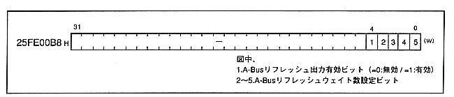
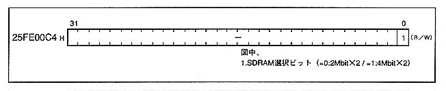
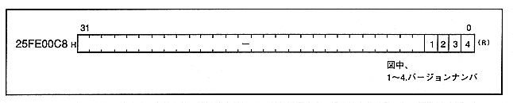

-
■ A-Bus refresh register
- Figure 1.21 shows the A-Bus refresh register map. Configure the A-Bus refresh settings.
Figure 1.21 A-Bus refresh register map

-
■ SCU SDRAM selection register
- Figure 1.22 shows the SCU SDRAM selection register map.
Figure 1.22 SCU SDRAM selection register map

-
■ SCU version register
- Figure 1.23 shows the SCU version register map.
Figure 1.23 SCU version register map
